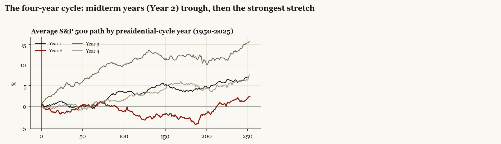

| admin | party | ann_return_pct | ann_vol_pct | share_big_days_pct | vix_mean | vix_p90 | worst_day_pct | best_day_pct | days |
|---|---|---|---|---|---|---|---|---|---|
| Bush41 | R | 11.3 | 13.4 | 19.5 | 18.9 | 26.8 | -6.3 | 3.7 | 980 |
| Clinton | D | 13.7 | 15.6 | 22.4 | 19.0 | 27.1 | -7.1 | 5.0 | 1961 |
| Bush43 | R | -6.5 | 21.6 | 30.3 | 20.9 | 31.9 | -9.5 | 11.0 | 1987 |
| Obama | D | 12.3 | 17.3 | 26.3 | 19.4 | 30.0 | -6.9 | 6.8 | 2015 |
| Trump1 | R | 13.3 | 20.7 | 21.8 | 18.3 | 28.6 | -12.8 | 9.0 | 1007 |
| Biden | D | 11.8 | 16.5 | 29.1 | 19.4 | 27.4 | -4.4 | 5.4 | 1004 |
| Trump2 | R | 12.0 | 17.4 | 21.9 | 19.2 | 24.9 | -6.2 | 9.1 | 347 |
Annualized daily-return statistics within each term; share_big_days = share of days with absolute move over 1 percent.